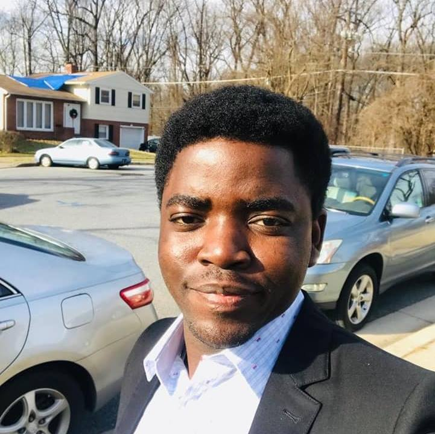

Adebola Hassan

Summary
I am a hardworking and dedicated individual with experience in GIS development.
Education
- Master of Science, Photogrammetry and Geoinformatics - HFT Stuttgart (2016 - 2018)
- Master of Science, Urban and Regional Planning - OAU Ile-Ife (2015 - 2017)
- Bachelor of Science, Geography and Planning - AAU Akungba (2008 - 2012)
Work Experience
Skills
- Programming: ⭐️⭐️⭐️⭐️⭐️
- GIS: ⭐️⭐️⭐️⭐️⭐️
- Research: ⭐️⭐️⭐️⭐️
Awards and Certifications
- Record Project Completion Time - Samac Group (Dec 2015)
Other